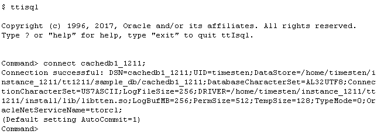
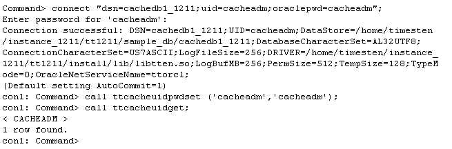

Before you can start caching Oracle tables, you need to create a TimesTen in-memory database. This database must include a user with either ADMIN or CACHE_MANAGER privilege. This user is known as the cache manager user, he is responsible for administrating the cache groups. The Oracle user that owns the tables to be cached must also exist in the cache database, this user is known as the cache table user.
1. Create a Cache Database
Create a cache database by first defining a DSN, in this tutorial we will use cachedb1_1211.
On Linux and UNIX systems, system DSN are defined in the <instance_dir>/conf/sys.odbc.ini file.
The following section goes through an example of how to set up a system DSN. Suppose that you want to:
- name your TimesTen database cachedb1_1211
- have your TimesTen instance known as $TIMESTEN_HOME location be /home/timesten/instance/tt181
- have your TimesTen database's disk location be /home/timesten/instance/tt181/sample_db/
- have your TimesTen database's transaction logs located in the same directory as your database
In your sys.odbc.ini file, add a new data source name in the section labeled [ODBC Data Sources] :
cachedb1_1211=TimesTen 18.1 Driver
For each DSN entry specified, there is a corresponding set of database properties and attributes you need to specify. The database attributes can be added anywhere after the [ODBC Data Sources] section.Note: The DSN name appears inside square brackets at the top of the DSN definition on a line by itself
[cachedb1_1211]
Driver=/home/timesten/instance/tt181/install/lib/libtten.so
DataStore=/home/timesten/instance/tt181/sample_db/cachedb1_1211
PermSize=512
TempSize=128
LogBufMB=256
LogFileSize=256
DatabaseCharacterSet=AL32UTF8
OracleNetServiceName=ttorcl
Note: the DSN attribute OracleNetServiceName must contain a valid TNS service name pointing to the Oracle database, and the value of DatabaseCharacterSet must be identical to the database character set defined in the Oracle database. Please update these two attributes with the correct settings before proceeding. If necessary, refer to the section Creating a TimesTen Database for more information.
In the example, we are using ttorcl as the OracleNetServiceName and AL32UTF8 as the DatabaseCharacterSet.
Create and connect to the database cachedb1_1211 in ttIsql as the instance administrator
ttisql
connect cachedb1_1211;
2. Create a Cache Manager User
Create a cache manager user by granting either ADMIN or CACHE_MANAGER privilege to this user. This user is responsible for setting up and managing the cache, and creating and loading data into the cache groups.
In the example, cacheadm is the cache manager user. This user has the same user name as the cache administration user in the Oracle database.
create user cacheadm identified by cacheadm;
grant admin to cacheadm;
3. Create a Cache Table User
In order to cache Oracle tables, the user who owns the Oracle tables to be cached must also exist in the TimesTen cache database.
In our example, we are caching the tables owned by the HR user. Therefore the HR user needs to be created.
create user hr identified by hr;
grant create session to hr;
4. Associate the Oracle Cache Administration user with the Cache Database
Log in as the cache manager user, making sure to specify the password used by the cache administration user in the Oracle database. Use the built-in procedure ttCacheUidPwdSet to associate the Oracle cache administration user with the cache database. Verify that the Oracle cache administration user has been set by calling the procedure ttCacheUidGet.
connect "dsn=cachedb1_1211;uid=cacheadm;oraclepwd=cacheadm";
call ttcacheuidpwdset ('cacheadm','cacheadm');
call ttcacheuidget;
Click here to learn how to create cache groups to a cache Database.
For more information about Configuring a TimesTen database to cache Oracle Database data refer to the documetation here